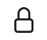

Het lettertype Courier wordt gebruikt om iets op te schrijven dat u op het toetsenbord kunt typen. Uitzondering hierop zijn de volgende speciale toetsen: SPATIEBALK, CTRL, ALT, SUPER, MENU, TAB, HOME, END, ESC, DELETE, PageDown, PageUp, PrintScreen, F1, F2 … en ENTER, hier dient u betreffende toets in te drukken in plaats van het woord in te typen.
Rondleiding GNOME
Aanmelden in de displaymanager met account (gebruikersnaam=tux, wachtwoord=tux)
Schermbeveiliging
Expres aanzetten (SUPER+L)
Wachtwoord invoeren om verder te kunnen gaan
Hulp openen (SUPER+F1)
Zoeken in Hulp met CTRL+S, zoeken op één pagina met CTRL+F
GNOME is een desktop manager
Modi
Normale modus
Activiteiten modus (SUPER)
Toepassingen starten
Documenten zoeken
Toepassing wisselen
Dash favoritieten verwijderen
Applicatie modus
Applicatie modus (SUPER+A)
Toepassingen starten
Werkblad wisselen
Toepassing slepen naar werkblad
Dash aanpassen
Dash
snelstarters voor veelgebruikte programma’s
overzicht open programma’s
Sneltoetsen SUPER+1, SUPER+2, … Om te openen en later focus terug te geven
Bovenbalk
Activiteiten knop
Toepassingen menu (later)
Notificatie venster / Kalender (SUPER+V)
Toegankelijkheidsmenu (indien er een toegankelijkheids optie aanstaat)
Systeemmenu
Notificatie venster (SUPER+V)
kalender activeren met online-account
Systeemmenu
Volume regeling
Screenshots maken
Instellingen
Netwerk instellingen
Vergrendeling
Uitschakelen en afmelden
Uitschakelen (ALT+CTRL+DEL)
Toepassingen starten en afsluiten
Toepassingen starten op zes manieren
Via sneltoets
Activiteiten modus (SUPER)
Type de naam van de toepassing in zoekvak
Dash
Sneltoetsen: SUPER+1, SUPER+2, SUPER+3, etc.
Openen
Focus terug te krijgen
Klik op icon om toepassing te starten
CTRL klik voor een nieuw venster
Applicatie modus (SUPER+A)
Klik icon om toepassing te starten
Slepen naar werkblad
Toepassingsmenu (SUPER+F10)
Wisselen tussen vensters
Nieuw venster
Details in Software
Toepassing afsluiten
Extra venster openen
Via CTRL en muisklik op dash
Via toepassingsmenu
Via menu binnen applicatie
Via slepen naar werkblad in applicatie modus
Toepassingen afsluiten of vensters sluiten
Indien u het laatste open venster van een toepassing sluit, sluit u ook de toepassing af.
Vensters sluiten
ALT+F4
Druk op het kruisje rechtsboven in de titelbalk van een venster
Via bestandmenu van de toepassing
Toepassingen afsluiten
Via toepassingsmenu
Via bestandsmenu van de toepassing
Veel gebruikte toepassingen
Internet browser: Firefox
Bestandsbeheer
Internet browser: Firefox
Belangrijkste sneltoetsen
Nieuw tabblad openen CTRL+T
Tabblad sluiten CTRL+W
Focus naar adresbalk CTRL+L
Zoeken met een zoekmachine naar keuze CTRL+K
CTRL+↓, CTRL+↑ om zoekmachine te selecteren
ALT+↓, ALT+↑ om zoekmachine te selecteren als u al iets ingetyped hebt
Nieuw venster CTRL+N
Afsluiten CTRL+Q
Links openen op een nieuw tabblad
CTRL+SHIFT met muisklik opent een link op een nieuw tabblad en schakelt naar het nieuw geopende tabblad
CTRL met muisklik opent een link op een nieuw tabblad
Met CTRL+TAB wisselt u tussen de tabbladden. Met CTRL+SHIFT+TAB in tegengestelde richting.
Plaatje openen in nieuw tabblad
Klik rechts op plaatje, om het context menu te openen en kies “Afbeelding openen in nieuw tabblad”
Bladwijzers
Aanmaken
CTRL+D
via hamburgermenu , “Bladwijzers >”, “Bladwijzer toevoegen”
 slepen naar Bladwijzerbalk
klikken op ster rechts van het adres in de adresbalk
Verwijderen
Klik op blauwe ster als u op die pagina bent, kies op de popup “Bladwijzer verwijderen”
Via bladwijzers beheren
Rechtsklikken op bladwijzer op bladwijzerbalk om het context menu te openen en “Bladwijzer verwijderen” kiezen
Beheren
via hamburgermenu “Bladwijzers >” “Bladwijzers beheren”
CTRL+SHIFT+O
Bladwijzerbalk
tonen en verbergen
via hamburgermenu “Bladwijzers >” “Bladwijzerbalk tonen/verbergen”
 , “Bladwijzers >”, “Bladwijzer toevoegen”
, “Bladwijzers >”, “Bladwijzer toevoegen” rechts van het adres in de adresbalk
rechts van het adres in de adresbalk